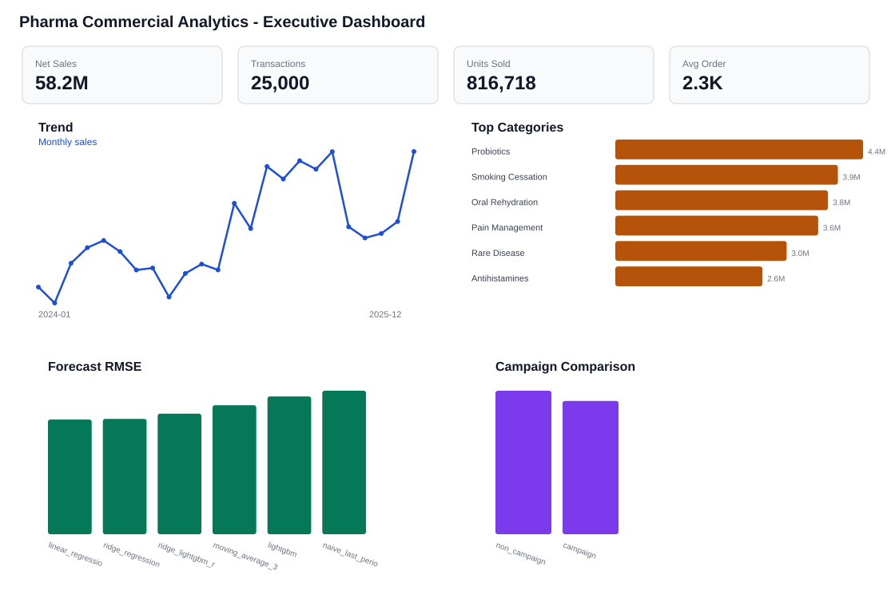

{kind=link}
{kind=link}
{kind=link}
{kind=link}
{kind=link}
{kind=link}
Generate data
I create safe sample rows with category, region, channel, price, discount, and campaign fields.
Project brief
Pharma Commercial Analytics takes sales-style rows and turns them into something easier to read: KPIs, forecasts, category groups, campaign checks, and dashboard files you can open.
My old project note mentioned 600K+ transactions across 57 categories. I don't have those raw files here, so I rebuilt a public version with generated data. Every public claim is tied to a file in this repo.
Dashboard output

Build
A reviewer shouldn't have to guess what happened. I split the work into data, SQL, code, reports, charts, and notes.
I create safe sample rows with category, region, channel, price, discount, and campaign fields.
I check dates, duplicate IDs, bad quantities, missing fields, and sales numbers.
I make category, region, channel, month, campaign, and customer-segment summaries.
I use past-month values for forecasts, K-means for groups, and bootstrap ranges for comparison.
Output
These charts and tables come from the run. They're here so the work is quick to check.
Tools
This isn't about throwing the fanciest model at the problem. It's about moving from rows to numbers to a dashboard someone can understand.
Limits
This is commercial analytics with generated public data. It is not a clinical project, not a production system, and not proof of campaign lift.
Files
The code, reports, charts, and notes are linked from here so you don't have to hunt.
{kind=link}
{kind=link}
{kind=link}
{kind=link}